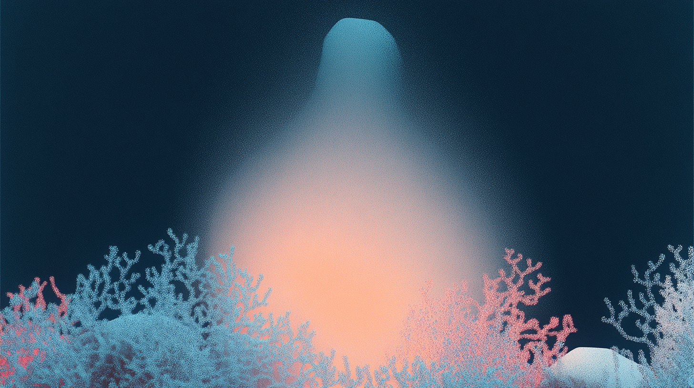

Global Exchange
グローバルな交流の場
世界中の仲間とつながり、アイデアを共有

About Global Exchange
グローバルネットワークの構築
世界中の創造的な仲間たちとつながり、新しいアイデアや視点を共有する場を提供します。文化や背景を超えた対話を通じて、革新的なソリューションを生み出すコミュニティを形成します。
多言語サポート
日本語/英語/中国語対応
オンライン参加
世界中どこからでも参加可能
ネットワーキング
グローバルな人脈形成
知識共有
専門知識とスキルの交換
Program

グローバルフォーラム
世界各国の専門家による講演とディスカッション

ワークショップ
実践的なスキル習得と問題解決セッション
文化交流
異文化理解とコミュニケーション
コミュニティーについて
国際PR
NPOプロジェクトの国際的な認知度向上
組織形成
国際的な新しい組織の形成と連携
企画提案
助成金に対する革新的な企画提案
NPO支援
他国でのNPO連携・設立支援
コミュニティーの活動の流れ
プロジェクト発足
メンバーの興味・関心からスタートする参加型プロジェクト
- 音楽・アートイベント
- 環境保護活動
- 教育支援プログラム
- テクノロジー活用企画
コミュニティー形成
プロジェクトを通じた仲間との出会いと関係性の構築
- 国際交流の促進
- 異分野コラボレーション
- スキル・知見の共有
- ネットワークの拡大
プロジェクト実現
OCNがプロジェクトの実現をサポート
- 資金調達アドバイス
- 専門家によるメンタリング
- 助成金申請支援
- 運営ノウハウの提供
※ プロジェクトの内容や規模に応じて、柔軟にサポート内容を調整します
イベントスケジュール例
Day 1
キックオフミーティング
プロジェクトの目的共有とチーム形成
Week 1-2
アイディア創出フェーズ
オンラインワークショップとブレインストーミング
Week 3-4
プロトタイプ開発
具体的な企画立案とフィードバック
Final Week
成果発表会
プロジェクト提案と次のステップの検討
※ このスケジュールは一例です。実際のイベントスケジュールは参加者と調整の上で決定します。
参加申し込み
開催情報
- 開催形式：オンライン/オフラインハイブリッド
- 開催頻度：月1回程度
- 所要時間：2-3時間程度
- 参加費：無料
- 定員：オンライン20名/オフライン10名
- 言語：日本語/英語（同時通訳あり）
よくある質問
参加に必要な要件はありますか？
特別な要件はありません。グローバルな交流に興味のある方なら誰でも参加できます。
オンライン参加に必要な環境は？
安定したインターネット接続とZoomアプリケーションが必要です。
録画視聴は可能ですか？
はい、参加者には後日録画を共有いたします。